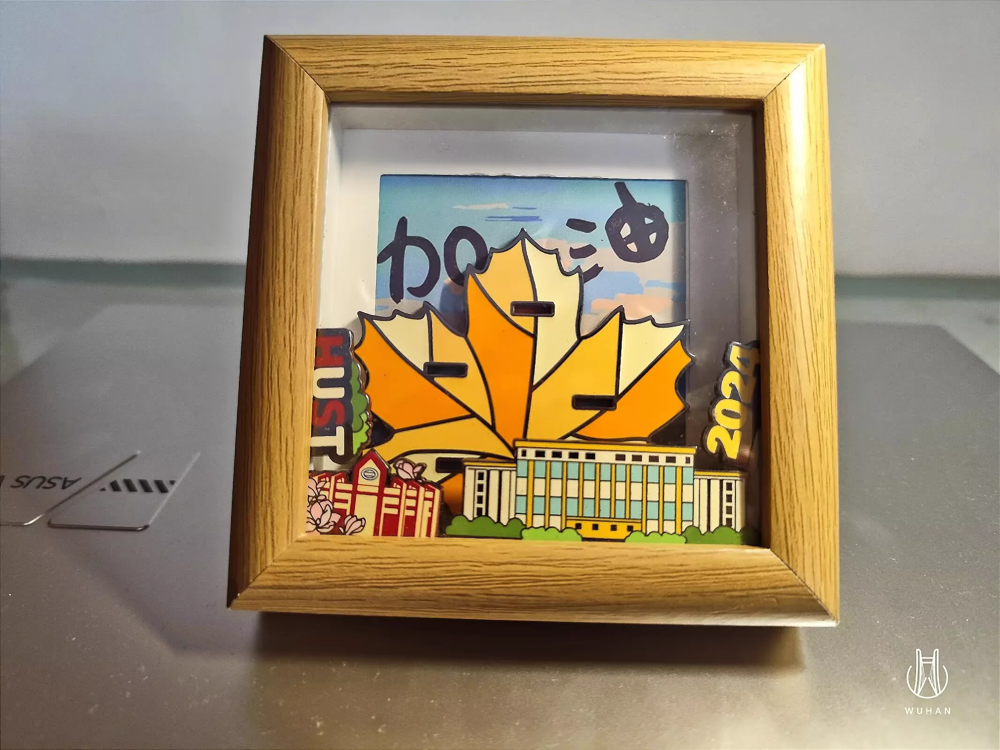
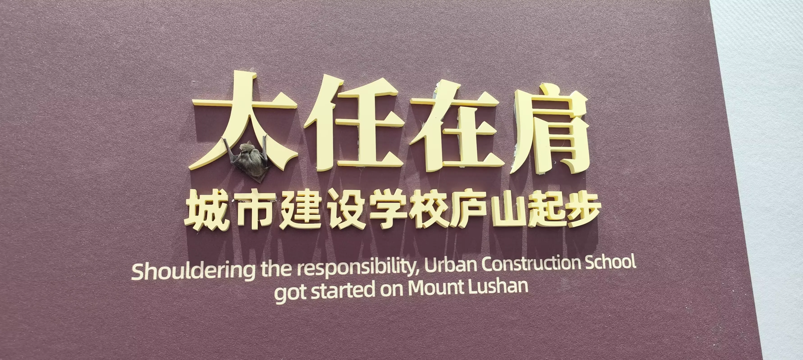
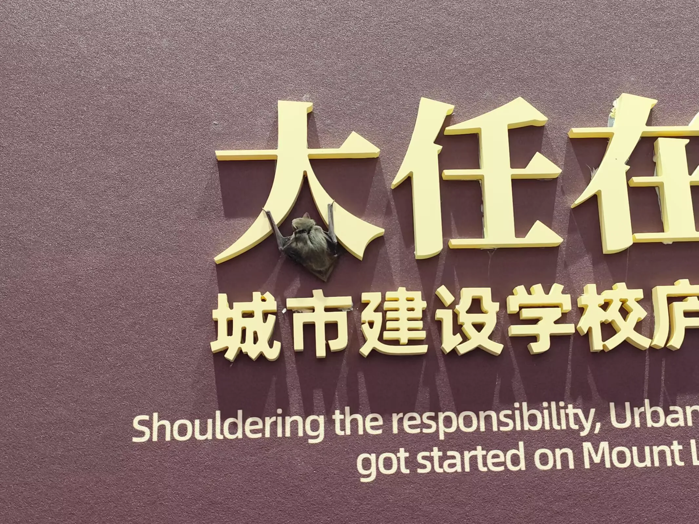

Journal · 2024-09-08
华中科技大学紫菘学生公寓
我在浔阳江头，收到了江城的枫叶； 又在紫菘楼下，收到了组织的offer.
By the banks of the Xunyang River, I received a maple leaf from the River City; And then, beneath the Zisong dorms, I received an offer from the organization.
Au bord du fleuve Xunyang, j'ai reçu une feuille d'érable de la Cité-fleuve ; Puis, au pied de la résidence Zisong, j'ai reçu une proposition de l'organisation.
Am Ufer des Xunyang-Flusses erhielt ich ein Ahornblatt aus der Flussstadt; Und dann, vor dem Zisong-Wohnheim, erhielt ich eine Zusage der Organisation.

关山难越，谁悲失路之人？ 萍水相逢，尽是吾乡师友！
Hard it is to cross the mountain passes — who pities the lost traveler? Meeting by chance like duckweed on the water, yet all about me are teachers and friends of home!
Difficile de franchir les cols — qui prendrait pitié de l'égaré ? Des rencontres fortuites comme des lentilles d'eau, et pourtant tout autour de moi ce sont les maîtres et amis de mon pays !
Schwer ist's, die Bergpässe zu überqueren — wer erbarmt sich des Verirrten? Zufällige Begegnungen wie Wasserlinsen, doch rings um mich sind lauter Lehrer und Freunde der Heimat!

方是钰 :
方是钰 :
方是钰 :
方是钰 :
2024年9月8日 13:35
柴江赣北 : 这回真的，两眼泪汪汪了 2024年9月8日 21:23
“熊学理论”第27条： 敲锣打鼓送蝙蝠（祝福）！
2024年9月8日 13:35
柴江赣北 : This time it's real — tears are welling up in both my eyes 2024年9月8日 21:23
"Bear Theory," Article 27: see the bat off with gongs and drums (a blessing)!
2024年9月8日 13:35
柴江赣北 : Cette fois c'est vrai, j'ai les larmes qui montent aux deux yeux 2024年9月8日 21:23
« Théorie de l'Ours », article 27 : raccompagner la chauve-souris gongs et tambours battants (un vœu de bonheur) !
2024年9月8日 13:35
柴江赣北 : Diesmal ist es echt, mir steigen die Tränen in beide Augen 2024年9月8日 21:23
„Bären-Theorie“, Artikel 27: die Fledermaus mit Gong und Trommel das Geleit geben (ein Segen)!


柯丽涵 : 好可怕 2024年9月8日 16:13 柴江赣北 回复柯丽涵 : 庐山起步，值得祝福！ 2024年9月8日 16:55 柯丽涵 回复柴江赣北 : 那只蝙蝠好可怕 2024年9月8日 17:38
柯丽涵 : So scary 2024年9月8日 16:13 柴江赣北 回复柯丽涵 : Setting out from Mount Lu — that calls for a blessing! 2024年9月8日 16:55 柯丽涵 回复柴江赣北 : That bat is so creepy 2024年9月8日 17:38
柯丽涵 : C'est trop effrayant 2024年9月8日 16:13 柴江赣北 回复柯丽涵 : Un départ depuis le mont Lu, ça mérite un vœu ! 2024年9月8日 16:55 柯丽涵 回复柴江赣北 : Cette chauve-souris est trop flippante 2024年9月8日 17:38
柯丽涵 : Gruselig 2024年9月8日 16:13 柴江赣北 回复柯丽涵 : Ein Aufbruch vom Lu-Berg, das verdient einen Segen! 2024年9月8日 16:55 柯丽涵 回复柴江赣北 : Diese Fledermaus ist unheimlich 2024年9月8日 17:38